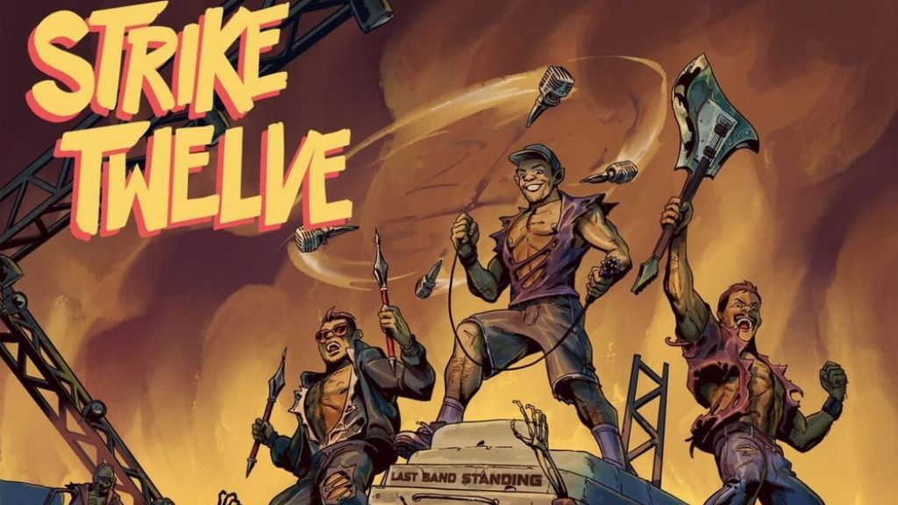

San Diego's Strike Twelve Release 'Last Band Standing’

San Diego/Temecula punks Strike Twelve have released the new album 'Last Band Standing' via Thousand Islands Records.
Watch the video for "Baseball Bat" here: https://youtu.be/NmmM301ezr4.
Video shot by Danny, Joey, Matty, and Melisa. Edited by Aaron Bruski.
Guitarist/vocalist Matty T says, "'Baseball Bat' involves a violent physical release caused by prolonged emotional suppression. Sometimes I just can’t bite my tongue any longer and before I open my big mouth it’s better to physically exert myself."
Strike Twelve is
Matt Turek (“Matty T”) - guitar / vocals
Joe Treister (“Joey T”) - bass / vocals
Dan Bahou (“Danny B”) - drums
Danny B, Matty T and Joey T of So-Cal punk rock band Strike Twelve have been playing live at your local dive since 2003. Whether they’re first or last in the lineup, they will undoubtedly be the band having the most fun. They love what they do and they love doing it with each other, which is why all three members have stuck with the band since the beginning. With an unmatched chemistry that can only be developed with twenty years of friendship, it’s safe to say that this isn’t just a phase. Their new album Last Band Standing will be out in summer 2023 on Montreal-based Thousand Islands Records, and hopefully it will help to take their excellent adventure to the international stage.
This dispatch was last updated on February 9, 2024